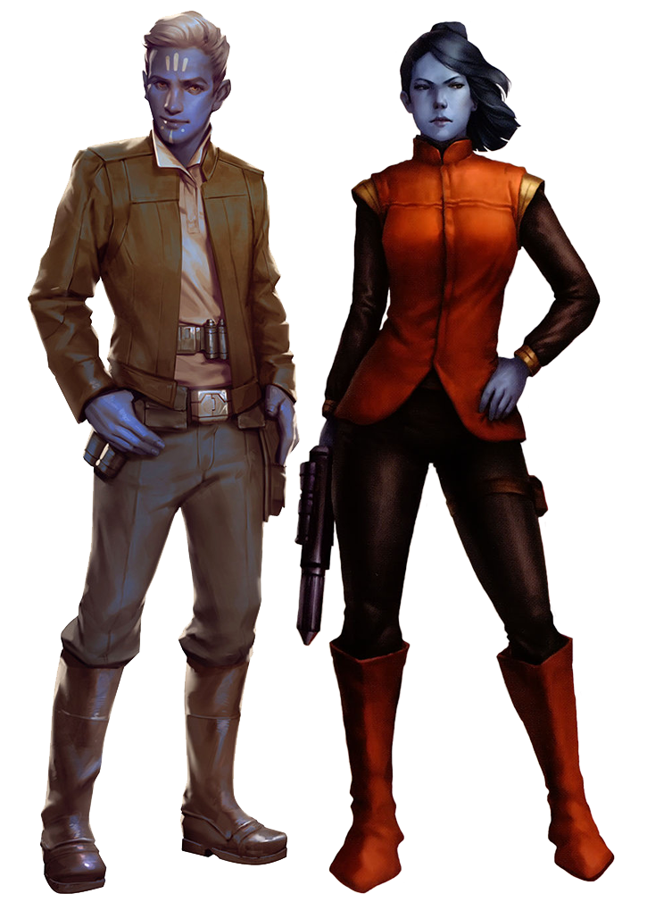

Pantoran
Special Abilities: Pantorans begin the game with one rank in either Cool or Negotiation. They still may not train Cool or Negotiation above rank 2 during character creation.
Tundra Dwellers: When making skill checks, Pantorans may remove ■ imposed due to cold environmental conditions.
These blue-skinned near-humans come from a cold climate and were vibrant participants in galactic society during the time of the Republic. In the time of the Galactic Civil War, the democratic and politically active Pantorans have found themselves in a precarious position in galactic politics, one rife with disaster but also promise.
Pantorans are a near-human species with skin of various shades of blue and yellow eyes (with some rare instances of black. Their hair ranges in color from black and blue to light purple and white. They have an average height similar to that of humans, a bit less than two meters. Their physiology allows them to be comfortable in lower temperatures, requiring only a couple of layers of casual clothing in icy climates. In all other aspects, Pantorans are nearly identical to humans.
Fiercely independent believers in freedom and democracy, the Pantorans still have small cultural holdovers from a more feudal era. Pantorans wear yellow marks on their forehead, under their eyes, and on their cheeks to denote their family names and lineages. Most Pantorans have a general interest in genealogy and history, and enjoy spending time searching for long-lost relatives and connections to ancient heroes and historical figures. A few Pantorans still hold noble titles. Some also wear headgear and jewelry proudly denoting birthplaces and associated famous geographic regions where ancient Pantoran battles, treaties, artistic works, and the like occurred. However, in this current age, Pantorans have turned global politics and debate into an art form in the spirit of democracy.
Bitter and heated arguments rage across Pantoran society regarding the fate of their homeworld. When the Republic fell and the Galactic Empire ascended, Pantorans became deeply uncertain about their relationship with the galaxy. In both their democratic Assembly and public squares, three different camps have formed regarding Pantora’s political future. One camp—the appeasers—considers integration with the Empire a pragmatic goal. With the Empire’s recognition, Pantora would gain security both militarily and economically. Another camp insists on maintaining the ideals of the Republic. These traditionalists, or republicans, consider the Empire a betrayer of those ideals, although many also believe that the Rebels cannot truly restore the Republic. A growing few believe that Pantora needs to strike out on its own, to found new colonies and exploit new resources. These expansionists believe that they need to forge treaties with the nearby slavers and spice traders, but enough Pantorans see that direction as abhorrent that any such bill dies on the Assembly floor.
The far Outer Rim world of Pantora, a moon of the ice world Orto Plutonia, is located halfway between Suarbi and Alzoc in the Sujimis sector. Surrounded by slavers and spice traders, Pantorans consider themselves the last holdover of the Republic, complete with a democratic Assembly. The Assembly’s highest executive position is that of the Chairman. Second in leadership and head of the legislative branch is the Speaker of the Assembly, who keeps the Chairman’s power in check.
Somewhat isolated from the rest of the galaxy, Pantora doesn’t suffer direct oppression from the Empire, but the loss of the Republic has meant the loss of resources and money from the Senate. Pantora has been alone for the past two decades, struggling against the lawlessness of its neighboring systems. As a result, is has slowly built up a small navy of patriots and volunteers. The Assembly fears that making the navy any larger, though, might attract the attention of the Empire.
Individual members of the Assembly have made their own undocumented deals with other planets for resources, technology, information, and even mercenaries. The Assembly turns a blind eye as long as the deals don’t threaten the security of Pantora or its citizens. As time goes on, however, the likelihood of an incident forcing Pantora to exercise its sovereignty increases. Most Pantorans hope for this to occur later rather than sooner, especially as the Galactic Civil War rages on without a clear winner.
Another vestige of Pantoran feudal culture is found in the various dialects of its language. Each dialect is distinct enough that communication, though possible, is difficult. For this reason, when the Pantorans originally joined the Galactic Senate, they adopted Basic as their official global language, and now Basic is the first language of most Pantoran children. The homeworld’s education continues to emphasize a Republic-inspired curriculum, so Pantoran and its various dialects are slowly becoming unfashionable. Nevertheless, distinct Pantoran accents still permeate their spoken Basic. In addition, some Pantorans encourage private language education. Most end up learning a practical trade language, such as Huttese.
Pantorans, like humans, have no specific relationship to the Force. As members of a society struggling with galactic isolation for the past two decades they are open to new ideas, both good and bad. Their homeworld is flush with new philosophies and schools of thought: some foreign, others native, but all changing to match the Pantoran character. These include old, forbidden ideas about the Force. In addition, their devotion to Pantora’s future makes them highly motivated in unearthing Republic-era knowledge and technologies. They seek out ancient Jedi artifacts and temples as well as old Sith devices and bases, although their knowledge of the Jedi and Sith is spotty at best. Some younger Pantorans view the Republic as having a mythical quality, attributing to the Jedi near-impossible abilities more appropriate to wild tales told around the campfire. While this makes the average Pantoran open to the Force, it also makes them susceptible to the dark side.
During the Clone Wars, Pantora attempted to petition the Galactic Senate to recognize its sovereignty over its parent planet, Orto Plutonia. However, the Jedi who investigated the matter discovered the Talz who claimed to have been there for generations. The Chairman of the Assembly declared war on the Talz, but died in the ensuing slaughter. After receiving emergency powers, Senator Riyo Chuchi negotiated a treaty between the two peoples.
To many Pantorans, this One-Day War represents both the dangers of political power and the triumph of diplomacy and democracy. It also represents Pantora’s eager, naive, and potent desire to be recognized as a global power and participant in galactic politics. No world or people felt a greater psychic blow than the Pantorans when the Galactic Empire dissolved the Senate.
New tensions are arising now between the Talz on Orto Plutonia and the Pantorans. Since the collapse of the Republic, Pantora has been cut off from the galaxy. It is desperate to secure resources, including the natural resources on Orto Plutonia. The Talz, however, have no interest in allowing industry on their planet. Some Pantorans want to reaffirm Riyo Chuchi’s treaty out of respect for the Talz and the Republic. Others want to educate the Talz and integrate them into Pantoran society and political debates. Still other Pantorans think the treaty only refers to the Talz’s geographic location and that the rest of the planet is fair game. The Talz themselves sense something amiss, as they have reported unauthorized starships landing on Orto Plutonia. Who is piloting them and for what end, however, they do not know.